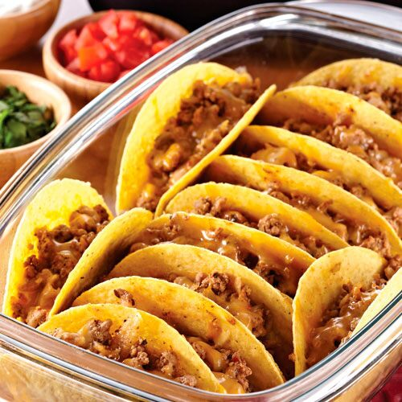

Turkey Tacos

Description
Turkey Tacos are a delicious and healthy alternative to beef tacos. In this recipe you will see just how easy and delicious turkey tacos can be for the whole family!
Ingredients
- ground turkey
- taco shells
- mexican cheese blend
- taco seasoning
- salsa
Steps
- Cook ground turkey in pan until no longer pink, add liquid and taco seasoning after
- Reduce heat and allow to simmer 10 minutes
- Fill taco shells with your cooked ground turkey and top with cheese
- Preheat oven to 400 degrees and bake tacos in oven for 8 minutes or until top edges of shell turn brown
- Allow to cool and add extra cheese if desired
- Add salsa on top for a nice added kick
- Enjoy!